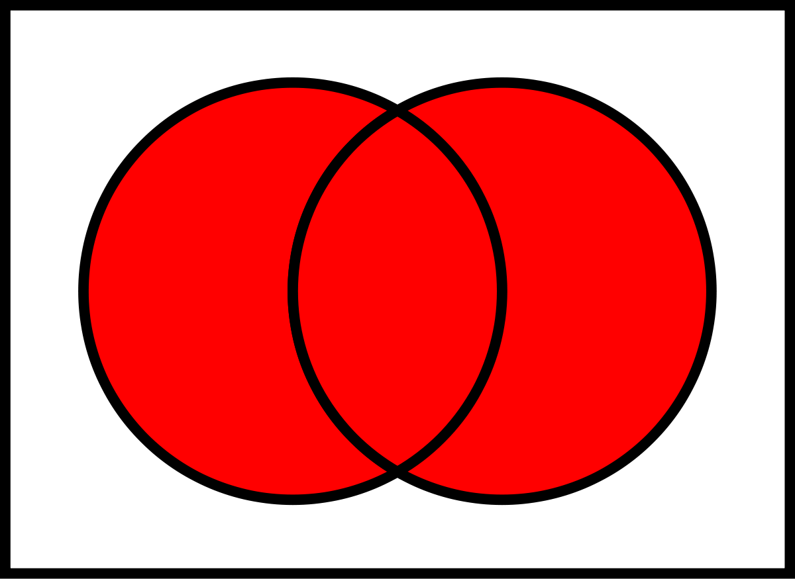

A small Scheme playground and a huge computational mathematics throwback.
@croman96, 2019.
According to almighty Wikipedia, a parser combinator is a higher-order function that accepts several parsers as input and returns a new parser as its output. (Photo: Polux)
Content
This project aims to help computer science students get familiarized or reinforce previous knowledge regarding parsers, which will be useful for further computer science courses including computational mathematics and compilers. The project consists of two main components: a script providing the essential tools for implementing a new parser for any given grammar and a website containing a brief introduction to parser combinators and an illustrative example using the parser generator within Mayor Goldberg’s parser for s-expressions to show the modular (functional) nature of the problem.
Parsing
Parsing is the process of analysing a string of symbols, either in natural language, computer languages or data structures, conforming to the rules of a formal grammar. In this context, a parser is a function accepting strings as input and returning some structure as output, typically a parse tree or a set of indices representing locations in the string where parsing stopped successfully.
Parser combinators?
A parsing combinator is a higher-order function that accepts several parsers as input and returns a new parser as its output. They can be used to combine basic parsers to construct parsers for more complex rules.
Introductory concepts.
Grammar
A formal grammar is a set of production rules for strings in a formal language. The rules describe how to form strings from the language's alphabet that are valid according to the language's syntax.
A formal grammar is a set of production rules for strings in a formal language. The rules describe how to form strings from the language's alphabet that are valid according to the language's syntax.Norman Chomsky proposed in the 1950’s a classic formalization of generative grammar consisting of the following components:
- Nonterminal/Terminal symbols.
- Union functions.
- Disjoint functions.
- Concatenation functions.
- Kleene star functions.
Union Set
The union of a collection of sets is the set of all elements in the collection.
Disjoint Set
In mathematics, two sets are said to be disjoint sets if they have no element in common. Equivalently, two disjoint sets are sets whose intersection is the empty set.

Concatenation Set
For two sets of strings s1 and s2, the concatenation s1s2 consists of all strings of the form vw where v is a string from s1 and w is a string from s2.
Kleene Star
Given a set of symbols or characters s, then the kleene star of the given s is the set of all strings over symbols in s, including the empty string ε.
Ok, that's nice, but why should we use functional programming?
Parsers can be defined as functions, as this document stated previously, parser combinators take different parsers as input and generate new parsers by combining those rules. Lambda calculus enables the programmer to define structures and execute them using different type of inputs within the same structure. This flexibility enables the programmer to construct reusable structures which will take different types of parsers as input to perform the wanted.
In computer science grammars and other concepts are evaluated with mathematical rigour. Simplicity is always a principal focus but it must still be able to express any program (i.e. is Turing complete). For reasoning about imperative code, there are Turing machines. But for reasoning about functional programming, there is the 𝜆-calculus.
The basic 𝜆-calculus is simple and expressive. For example, the programmer doesn't need loops, because they can be simulated with recursion and memory is used more efficiently because it isn’t being used to store the state of all currently active variables.

Pretty much like this movie, isn't it? (Photo: ArchDaily)
Setup instructions
Install Scheme and follow onscreen instructions.
Download parser-combinator.scm.
Download Mayer Goldberg's parsing-combinators-sexprs.scm.
Update load function from parsing-combinators-sexpr.scm to match your parser-combinator.scm file location.
(load “PATH/parser-combinator.scm”)
Run using the following command in your terminal:
scheme --load PATH/parsing-combinators-sexprs.scm
Now you can evaluate your own s-expressions as follows:
(read-sexpr "(defun factorial (x) (if (zerop x) 1 (* x (factorial (- x 1)))))")
Understanding the script.
test
This function checks if parser is able to construct an expression from given tokens. Uses the parser as a function and evaluates tokens. Returns the tokens that could be parsed successfully.
const
This function recognizes expressions at character level and defines a constant. Receives a string to match and an optional postprocessor.
caten
This function takes parsers as arguments and returns their catenation. Loops through each parser and catenates each parser with the next one in a list.
disj
This function takes parsers as arguments and returns their disjunction. Tries to parse given tokens with current parser, if it exits with success. If not, it evaluates the given tokens with the next parser. If it runs out of parsers, it failed.
star
This function takes parser and optional postprocessor. Returns parser for grammar that matches list of zero or more strings matched by p.
plus
This function does a variation of Kleene star. It omits the first term of the star union.